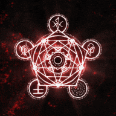

A Desconjuração é Brutal

Aqui eu vou anotar o que eu sei sobre Ordem e ir atualizando conforme eu aprendo html
No momento, as temporadas de Ordem são:
-
Ordem Paranormal: Iniciação (3 eps)
-
O Segredo na Floresta ou osnf (15 eps + revelando)
-
Desconjuração (O mais longo, 20 eps + revelando)
-
Calamidade Pt.1(O melhor na minha opinião, 13 eps)
-
O Segredo na Ilha ou osni (9 eps)
-
Sinais do Outro Lado ou sdol (8 eps)
-
Quarentena (Oneshot com pessoas de outros países, 2 eps)